FILMOGRAPHY
주요 작품
하이라이트 / Featured
감독 / Directed
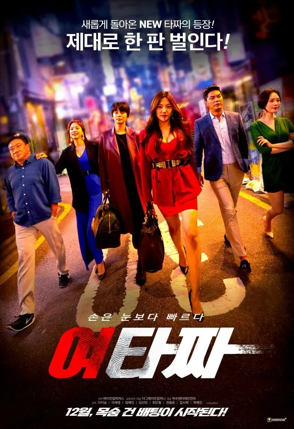
CAST
이채영, 정혜인
최민철, 김선빈
2021
여타짜
감독 · 이지승도박판에 뛰어든 미미가 정체불명의 타짜 오자와 만나 인생을 건 짜릿한 승부를 펼치는 범죄 오락 영화.
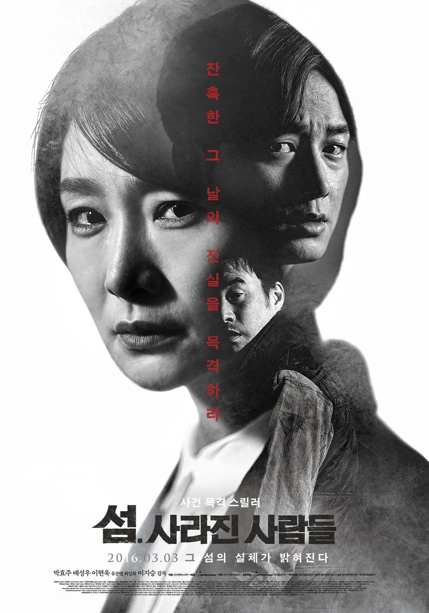
CAST
박효주, 배성우
이현욱
2015
섬. 사라진 사람들
감독 · 이지승염전노예 사건 제보를 받고 섬으로 간 기자들이 끔찍한 살인사건에 휘말리며 진실을 파헤치는 파운드 푸티지 스릴러.
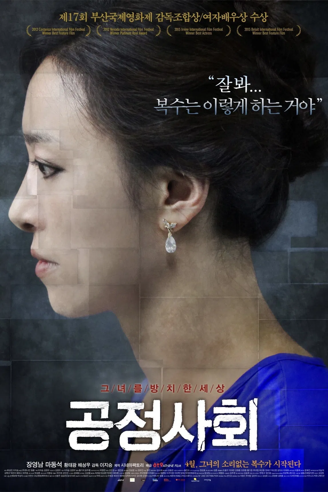
CAST
장영남, 마동석
황태광, 배성우
2012
공정사회
감독 · 이지승경찰과 남편이 외면한 딸의 성폭행범을 직접 찾아 나서 40일간의 추적 끝에 통쾌한 복수를 감행하는 엄마의 이야기.
프로듀서 / Produced
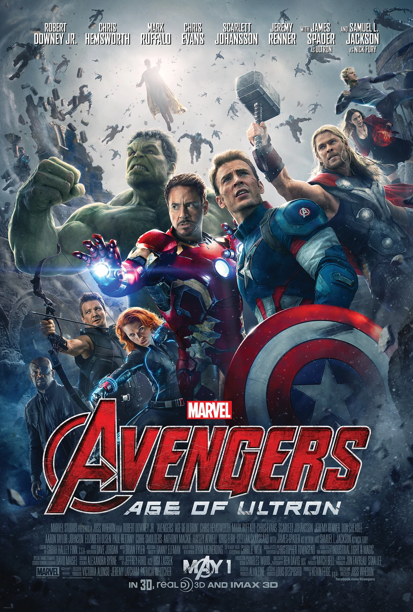
CAST
로버트 다우니 주니어
크리스 에반스, 수현
2015
어벤져스 : 에이지 오브 울트론
Korea Unit Producer인류를 멸종시키려는 인공지능에 맞서 최강의 전투를 벌이는 어벤져스의 글로벌 블록버스터.
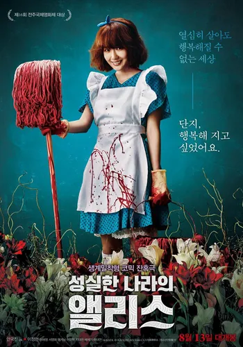
CAST
이정현, 이해영
명계남
2015
성실한 나라의 앨리스
Production Supervisor억척스럽게 살아온 수남의 잔혹한 복수극을 비롯해 KAFA가 배출한 완성도 높은 독립영화들.
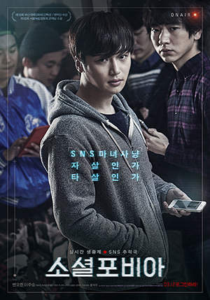
CAST
변요한, 이주승
류준열
2014
소셜포비아
Production Supervisor악플러의 죽음을 추적하며 벌어지는 숨 막히는 SNS 추적극 등 신선한 소재와 연출력이 돋보이는 작품들.
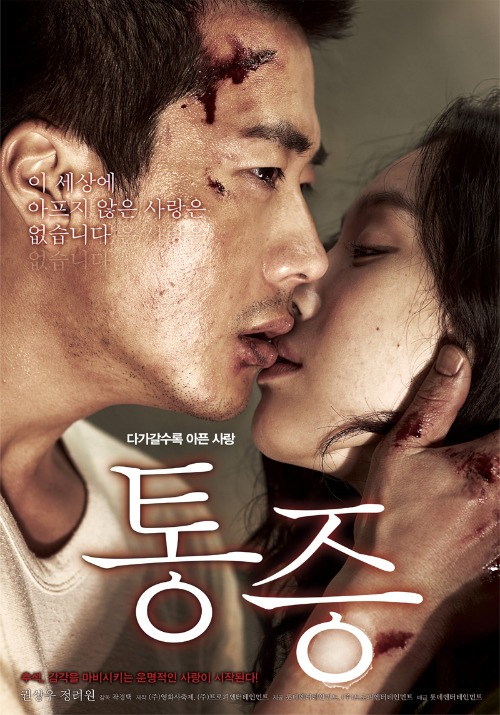
CAST
권상우, 정려원
마동석
2011
통증
Executive Producer통증을 느끼지 못하는 남자와 작은 상처에도 치명적인 통증을 느끼는 여자의 강렬한 멜로.
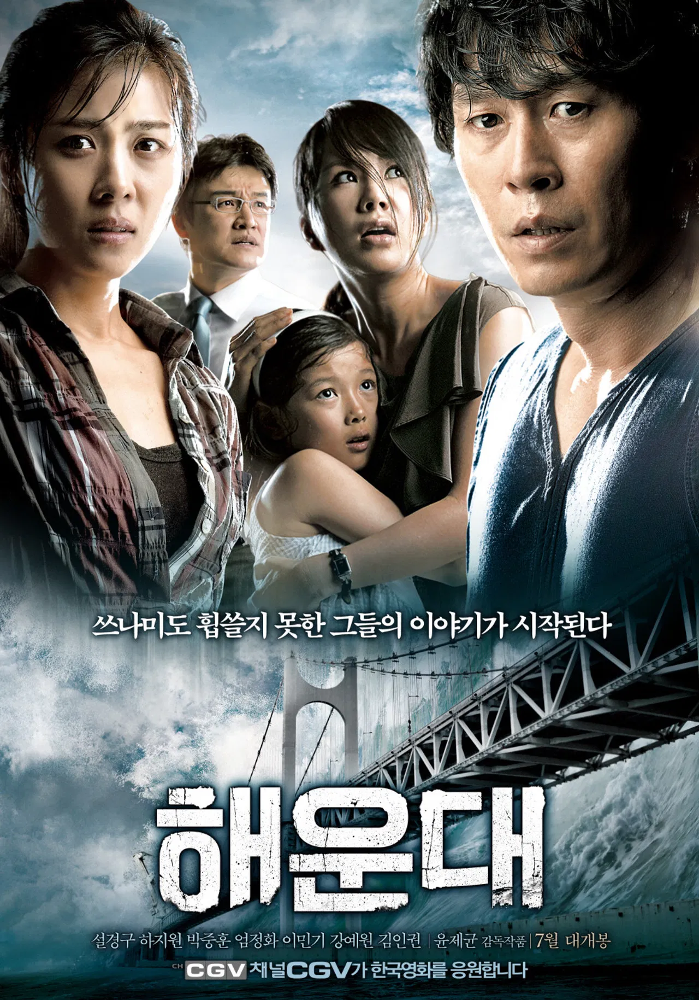
CAST
설경구, 하지원
박중훈, 엄정화
2009
해운대
Producer부산 해운대에 초대형 쓰나미가 닥치면서 생존을 위해 사투를 벌이는 재난 블록버스터.
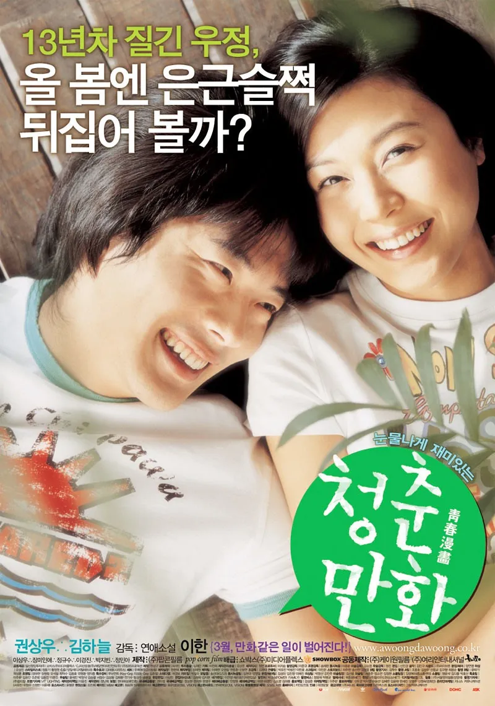
CAST
권상우, 김하늘
2006
청춘만화
Producer13년 지기 소꿉친구인 스턴트맨 지망생 지환과 배우 지망생 달래의 티격태격 로맨틱 코미디.
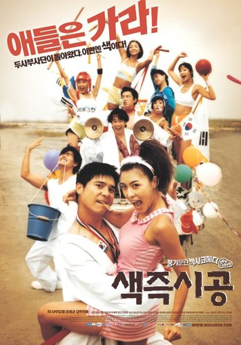
CAST
임창정, 하지원
유채영
2002
색즉시공
Producer대학 차력 동아리와 에어로빅 동아리 학생들 사이에서 벌어지는 좌충우돌 청춘들의 이야기.
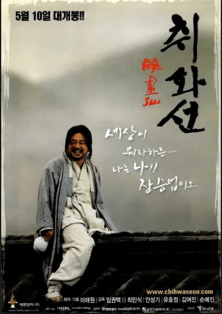
CAST
최민식, 안성기
유호정
2002
취화선 외
Planning조선 천재 화가 장승업의 예술혼을 그린 걸작 '취화선'을 비롯한 당대 웰메이드 상업영화 기획.